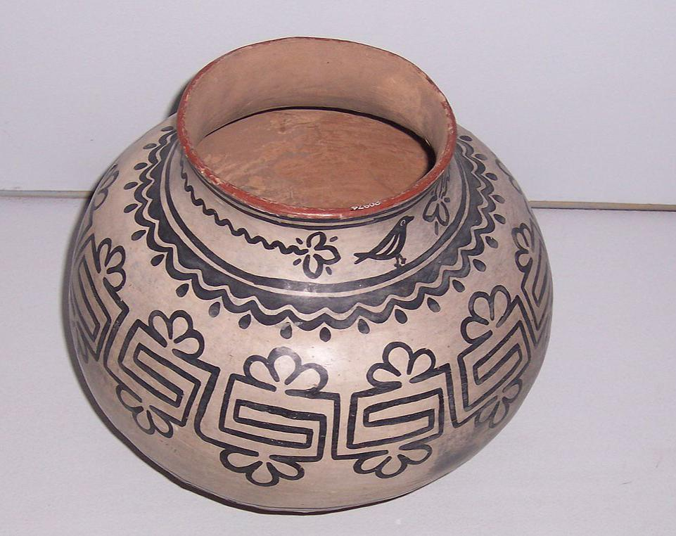
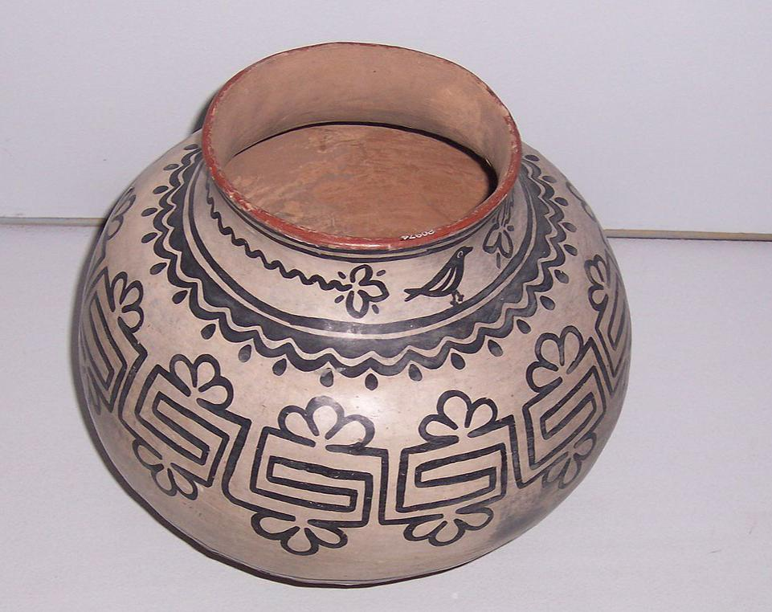

البويبلون
شعوب البويبلون أو شعوب البويبلو
 

هم من سكان أمريكا الأصليين في جنوب غرب الولايات المتحدة ممن يتشاركون في الممارسات الزراعية والمادية والدينية.
عندما دخل الإسبان المنطقة في مطلع القرن السادس عشر، واجهوا قرى مركبة ذات بيوت متعددة الطوابق مبنية من الطوب
والحجر وغيرها من
المواد المحلية، والتي أطلقوا عليها اسم «بويبلوس» أو القرى، وهو مصطلح أصبح لاحقًا يرمز أيضًا إلى الشعوب التي
تعيش في تلك القرى.
ما يزال هناك نحو 100 قرية بويبلوس مأهولة، من بينهم تاوس و سان إلديفونسو وأكوم وزوني وهوبي. تتمركز مجتمعات
بويبلو في ولايات نيو مكسيكو وأريزونا وتكساس في الوقت الحاضر، معظمها على طول نهري ريو غراندي وكولورادو
وروافدهما. يستخدم المصطلح
أناسازي أحيانًا للإشارة إلى أشخاص من قبيلة بويبلو ولكنه الآن غير مفضل إلى حد كبير. أناسازي هي كلمة قادمة من
لغة نافاهو وتعني الأجداد القدماء أو الأعداء القدامى، ومن هنا رفض شعوب بويبلو هذه التسمية.
تتحدث شعوب البويبلو لغات من أربع أسر لغوية مختلفة، ويتم تقسيم كل شعب قرية بويبلو ثقافياً بشكل أكبر عن طريق نظم
القرابة والممارسات الزراعية، على الرغم من أن جميعهم يزرعون أنواع مختلفة من الذرة.
على الرغم من الضغوط المتزايدة من القوات الإسبانية وقوات الأنجلو أمريكية لاحقًا، حافظت دول بويبلو على الكثير من
ثقافاتها التقليدية، التي تتركز حول الممارسات الزراعية، والمجتمع المترابط القائم حول العشائر العائلية واحترام
التقاليد. كان شعوب
البويبلو بارعين بشكل ملحوظ في الحفاظ على معتقداتهم الدينية الأساسية إذ كانوا في كل مرة يطورون مقاربة توفيقية
للكاثوليكية. في القرن الحادي والعشرين، قُدّر عدد سكان بويبلو بنحو 35,000 نسمة في ولايتي نيو مكسيكو وأريزونا.
الممارسات الثقافية
تقنيات الزراعة:
درس علماء الأنثروبولوجيا شعوب بويبلو على نطاق واسع ونشروا التصنيفات المختلفة لتقسيماتهم الفرعية. في عام 1950،
قارن فريد راسل غيلان شعوب بويبلوس الشرقية والغربية، استنادًا إلى تقنيات زراعة.
تتخصص شعوب قرى بويبلوس الغربية أو الصحراوية في زوني وهوبي في الزراعة الجافة، مقارنةً بمزارعي قرى بويبلوس
الشرقية والنهرية الذين يتّبعون نظام الري في الزراعة. تزرع كلتا المجموعتين الذرة في الغالب، ولكن القرع
والفاصوليا كانت أيضًا من ضمن
الأطعمة الأساسية في جميع أنحاء المنطقة.
القرابة والعقيدة الدينيه
في عام 1954، نشر بول كيرشوف تقسيمًا لشعب بويبلو إلى مجموعتين مستندًا إلى الثقافة. إذ تمتلك كل من قرى الهوبي
والزوني وكيريس وجيمز أنظمة قرابة وطيدة: يُنسب الأطفال المولودين لعشيرة أمهم ويجب أن يتزوجوا من خارج قبيلتهم
الأم، وهي تُعتبر ممارسة
غريبة. ويحتفظون بغرف «كيفا» متعددة للاحتفالات المقدسة. تحكي قصة الخلق لديهم أن البشر قد خرجوا من تحت الأرض.
يشددون على أربعة أو ستة اتجاهات أساسية مرقمة كجزء من علم الكونيات المقدس، ابتداء من الشمال. يُعد الرقمان أربعة
وسبعة هامان ضمن
طقوسهم الدينية وعلم الرمزية.
على النقيض من ذلك، اتّبع شعوب البويبلون الناطقون بلغة التانوان (عدا قرية جيمس) نظام القرابة الأبوية، مع اعتبار
الأطفال مولودين ضمن قبيلة والدهم. يمارسون زواجًا داخليًا أو زواجًا داخل العشيرة. لديهم نوعان من غرف الكيفا أو
مجموعتان من غرف
الكيفا في قرى بويبلوس الخاصة بهم. يعتمد نظام معتقداتهم على علم الكونيات الازدواجي. إذ تروي قصة الخلق لديهم
ظهور الناس من تحت الماء. يستخدمون خمسة اتجاهات، ابتداءً بجهة الغرب. وتستند أرقام طقوسهم الدينية إلى مضاعفات
الرقم ثلاثة.
اللغة
مجموعة لغات الكيريسن: تنتمي هذه اللغة إلى الكيريسنية المُستخدمة في الغرب والشرق، والتي يعتبرها البعض لغة فردية
تتكون من سلسلة من اللهجات تُستخدم في بويبلوس أكوما ولاغونا وسانتا آنا وزيا وكوشيتي وكيوا وسان فيليب.
مجموعة لغات كيوا-تانوان: تنتمي إلى فرع لغة تانوان (أو بويبلون)، والتي تتكون من ثلاثة فروع تحت رئيسية:
* تاوا: تُستخدم فقط في جيميز بويبلو.
* تيوا: وهي الفرع الأكثر استخداماً من اللغات التانوانية والمتضمنة للهجات عديدة، وتُستخدم هذه اللغة في أوهكاي
وينغيه وسان إلديفينزو وسانتا كلارا وتيسكو ونامبي وشعب بوجاك بويبلون.
* تايوا: وهي الفرع الوحيد من اللغة التانوانية الذي يتكوّن من عدة لغات
* تايوا الشمالية: تتألف هذه اللغة من لهجتين، تُستخدم لهجة منها في تاوس والأخرى في بيكوريس.
* تايوا الجنوبية: تتألف من لهجتين أيضًا وتُستخدم في سانديا وإسليتا التابعة لشعوب البويبلون
* أتو-أزتيكان: تنتمي إلى لغة الهوبي، وتُستخدم بشكل خاص في هوبي بويبلو.
* زوني: تنتمي إلى عائلة زوني، وهي عائلة فردية، تُستخدم الآن بشكل خاص في قرية زوني بويبلو.